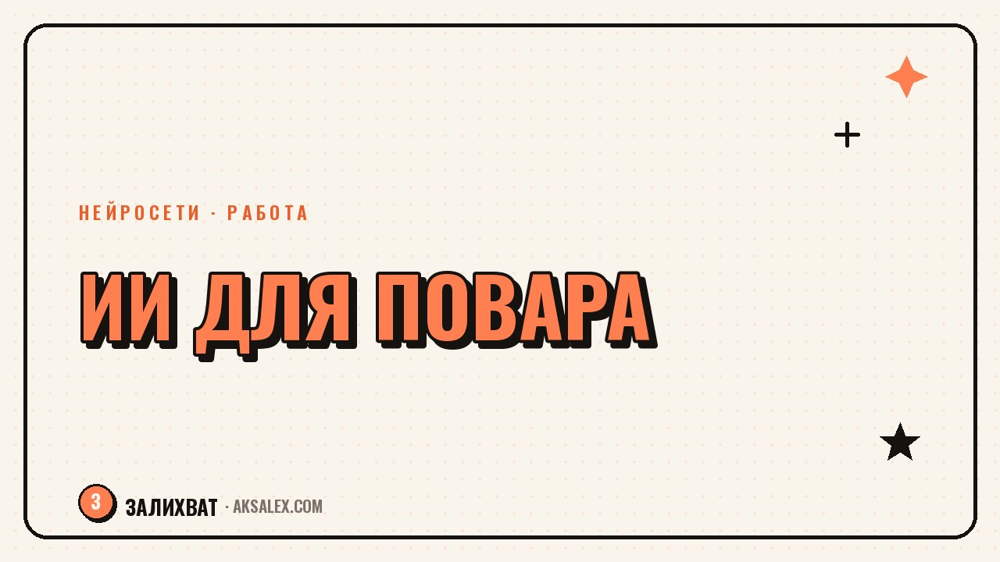

Нейросети для повара: меню, расчёты и соцсети

У повара редко бывает свободная минута: смена заканчивается, а дома ещё нужно придумать новое блюдо в меню, расписать техкарту и ответить гостям в директе кафе. Нейросети не заменят вкус и чувство баланса, которые нарабатываются годами у плиты, но снимают с тебя рутину вокруг кухни - бумажную работу, расчёты и тексты. Разберём по шагам, где именно ИИ реально экономит время повара и шеф-повара, а где лучше довериться своему опыту.
Для чего повару вообще нужны нейросети
Работа повара состоит не только из готовки. Это ещё калькуляция блюд, составление меню под сезон, написание описаний для гостей, а в небольших заведениях - и ведение соцсетей. Именно эту вторую часть можно сильно ускорить с помощью нейросетей, оставив себе больше времени на то, что действительно требует опыта: вкус, текстуру, подачу.
Важно сразу понять границу: нейросеть не продегустирует блюдо и не скажет, что соли мало. Зато она разложит рецепт на ингредиенты с граммовками, посчитает калорийность, предложит варианты замены продукта при аллергии гостя или перебоях с поставкой - и сделает это за минуты, а не за полчаса с калькулятором и таблицей.
Где именно экономится время
- Составление и обновление меню под сезон или акцию
- Расчёт себестоимости и наценки на блюдо
- Оформление техкарт и калькуляционных карт
- Описания блюд для меню и сайта заведения
- Посты и подписи для соцсетей кафе или ресторана
- Подбор замен ингредиентам при нехватке продукта
Составление меню и техкарт с ИИ
Самый частый запрос - собрать новое сезонное меню из того, что есть на складе или легко достать у поставщиков. Загружаешь в чат с нейросетью список продуктов, кухню (например, паста, гриль, азиатская), и просишь предложить 10-15 позиций с коротким описанием. Дальше из этой базы ты сам отбираешь то, что реально впишется в концепцию и прибыль заведения.
Для техкарт работает похожая схема: описываешь рецепт своими словами - что берёшь, сколько, в каком порядке готовишь - и просишь нейросеть оформить это в таблицу с граммовками на выход, расчётом по ГОСТ-форме или в том виде, который принят у тебя на кухне. Получаешь черновик за пару минут, а не час ручного набора в Excel.
Короткий алгоритм для нового блюда
- Опиши идею блюда и ключевые ингредиенты нейросети
- Попроси варианты подачи и сочетаний вкусов
- Выбери 2-3 варианта и доработай по своему опыту
- Попроси оформить техкарту с граммовками и выходом
- Проверь расчёт сам - калорийность и вес ИИ иногда округляет неточно
Нейросеть - это твой второй повар на подхвате, который быстро готовит черновик. А шеф всё равно ты: вкус, баланс и решение, что идёт в меню, остаются на твоей стороне.
Расчёт себестоимости и наценки
Калькуляция блюда - задача, которую многие повара откладывают, потому что это нудно: нужно свести цены закупки, вес каждого компонента, учесть потери при обработке. Нейросеть умеет собрать черновой расчёт, если ты дашь ей список ингредиентов с ценами за килограмм и граммовками по рецепту - она выдаст примерную себестоимость порции и подскажет, какую наценку обычно ставят в похожих заведениях.
Здесь стоит быть внимательным: точные цены закупки и проценты потерь при чистке продукта ты знаешь лучше любой нейросети, поэтому финальные цифры нужно сверять с реальными накладными. ИИ хорош как быстрый черновик и как инструмент для сравнения вариантов - например, что выгоднее поставить в меню, стейк или рыбу, при текущих ценах поставщика.
| Задача | Без нейросети | С нейросетью |
|---|---|---|
| Черновик меню из 10 блюд | 1-2 часа подбора и описаний | 10-15 минут на черновик |
| Техкарта на одно блюдо | 20-30 минут ручного набора | 3-5 минут + проверка |
| Расчёт себестоимости | Таблица в Excel, 15-20 минут | Черновой расчёт за 5 минут |
| Пост в соцсети о блюде | 15-20 минут на текст | 2-3 минуты + редактура |
Соцсети заведения и описания блюд
Если ты шеф небольшого кафе или ведёшь личный блог о кухне, писать тексты для соцсетей приходится самому, и это съедает вечер после смены. Нейросеть помогает набросать описание блюда для меню или сайта - сочное, с акцентом на ингредиенты и подачу, без штампов вроде «изумительный вкус». Твоя задача - дать точные детали (что за соус, с чем подаётся, какая текстура) и попросить убрать общие слова.
Для постов в соцсетях работает та же логика: расскажи нейросети, что за блюдо, почему оно появилось в меню, какая у него история - и попроси собрать короткий пост с этим фактом в основе. Чем конкретнее твой ввод, тем живее получится текст, потому что нейросеть не выдумывает detalей за тебя - она оформляет то, что дал ты.
Сервисы, которые пригодятся повару
- ChatGPT или Claude - тексты, меню, техкарты, переписка с поставщиками
- Gamma или Canva с ИИ - оформление меню и карточек для соцсетей
- Любая нейросеть для фото (например, встроенная в Canva) - лёгкая обработка снимков блюд
- Таблицы с ИИ-функциями (Google Sheets, Excel с Copilot) - расчёты себестоимости
Чего нейросеть точно не заменит на кухне
Главный риск - начать доверять нейросети больше, чем своим рукам и вкусу. ИИ не чувствует баланс кислоты и сладости в соусе, не видит консистенцию теста и не ощущает, пережарено ли мясо. Это зона исключительно твоего опыта, и никакой инструмент здесь не советчик - только подсказчик идей, которые ты сам проверяешь на вкус.
Та же осторожность касается точных цифр: калорийность, вес нетто после обработки, сроки хранения продукта - нейросеть может ошибиться или дать усреднённое значение. Для меню, где указана калорийность или аллергены для гостей, финальную цифру всегда нужно сверять по справочникам или ГОСТам, а не брать на веру от чат-бота.
Три правила безопасного использования
- Любой расчёт калорий и аллергенов - проверяй по справочной базе, а не только по ответу ИИ
- Техкарту всегда тестируй на кухне перед тем, как вносить в меню
- Тексты для соцсетей читай сам - нейросеть не знает твою аудиторию так, как ты
Частые вопросы
Может ли нейросеть составить готовое меню для кафе?
Она соберёт черновик с идеями блюд и описаниями, но финальный выбор позиций, баланс по себестоимости и вкусовые решения остаются за шефом. Используй её как отправную точку, а не готовый результат.
Можно ли доверять расчёту себестоимости от нейросети?
Только как черновику. Точные цены закупки, проценты потерь при обработке и актуальные остатки на складе нужно вносить самому и проверять итоговые цифры по накладным.
Какая нейросеть подходит для составления техкарт?
Подойдёт любой текстовый чат-бот типа ChatGPT или Claude - опиши рецепт своими словами, попроси оформить в таблицу с граммовками. Дальше таблицу нужно протестировать на кухне.
Нужно ли повару разбираться в нейросетях, чтобы их использовать?
Нет, достаточно уметь чётко описать задачу текстом: какие продукты есть, что нужно получить на выходе. Специальных технических навыков или программирования не требуется.
Заменит ли ИИ повара в будущем?
Вкус, подачу и чувство баланса в блюде нейросеть не воспроизводит - это требует живого опыта за плитой. ИИ скорее берёт на себя бумажную рутину вокруг кухни, оставляя повару больше времени на готовку.
Раз тема оказалась полезной, вот что почитать следующим. Гайд по ведению блога в Одноклассниках: оформление, форматы постов и работа с нейросетями для контента.
Читать статью →а не вручную